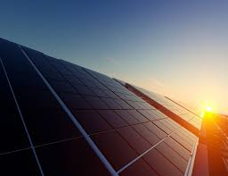
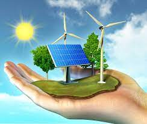

|
PREDNOSTI I MANE UPOTREBAE SOLARNIH PANELA U NAVODNJAVANJU ZEMLJIŠTA |
|
|---|---|
|
Prednosti upotrebe solarnih panela su ogromne i raznovrsne. Prednosti solarnih panela ogledaju se u:
| |
|
Kao što i svaki sistem i uređaj ima svoje prednosti i mane, tako i kod solarnih panela postoje mane, odnosno ograničenja i uslovi koji se moraju poštovati. Ugradnja sistema solarnih panela za navodnjavanje moguća je isključivo na ravnim površinama kojima se lako može pristupiti i koje se izložene Sunčevoj svjetlosti, odnosno koje nisu zaklonjene. Preporučljivo je i da solarni panel i pumpa budu blizu radi efikasnijeg funkcionisanja. |
 |
|
ZAKLJUČUJEMO! |
|
|---|---|
|  |
Ovo je samo od jedna od opcija brzog i efikasnog navodnjavanja zemljišta uz pomoć solarnih panela. Sisteme solarnih panela za navodnjavanje je potrebno prilagoditi biljnoj kulturi i njenim potrebama. Stoga, za svaku biljnu vrstu treba pojedinačno razmotrititi sve opcije navodnjavanja. Ovaj način navodnjavanja sem što se može nadgledati i pratiti preko kompjutera, ekološki je ,,čist’’ i ni na jedan način ne ostavlja negativne posljedice na životnu sredinu. Uz pomoć solarnih panela i energije Sunca poljoprivredni poslovi bili bi višestruko olakšani. |
|
Ovo je samo još jedna od tehnika i načina u koji čovječanstvo polaže nade i način na koji je moguće modernizovati poljoprivredu i njene grane, a u isto vrijeme spasiti i planetu Zemlju, odnosno smanjiti zagađenje u što većoj mjeri. |
|
|
Više o solarnim panelima: |
i ovdje! |
|---|